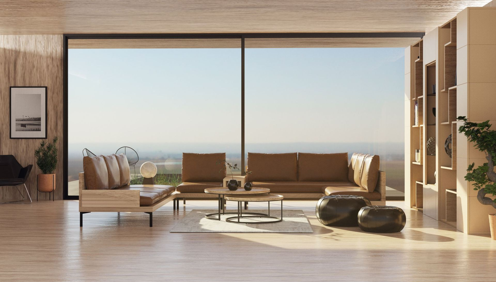
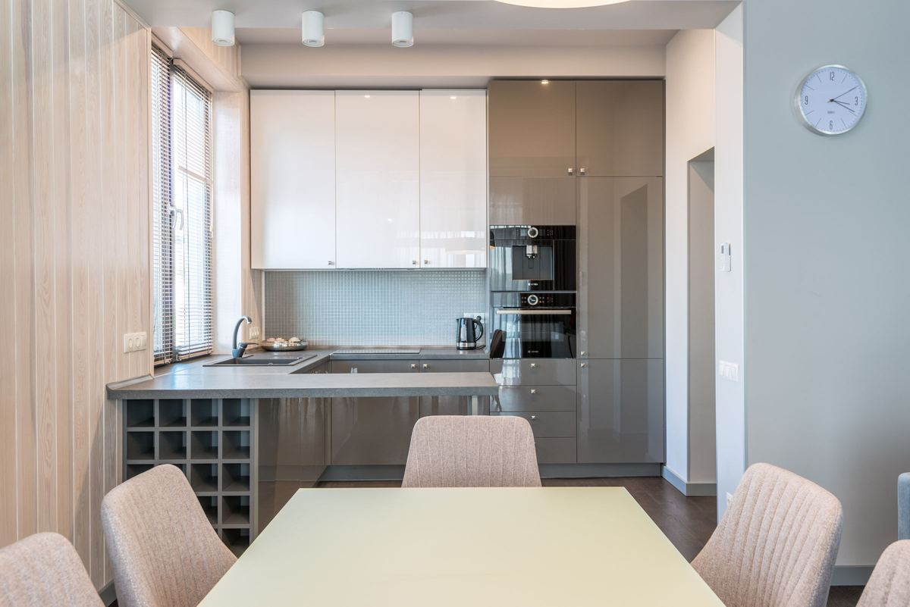
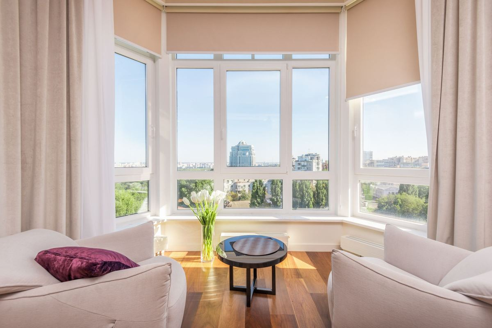

ייעוץ והכנה אישית לבחירת דירת התמורה שלכם
בוחרים דירת תמורה?
תגיעו לכנס הבחירה עם תוכנית.
אנחנו לומדים את תוכניות הפרויקט, את המקום שלכם בתור ואת הצרכים של המשפחה – ומגישים לכם, לפני כנס הבחירה, דוח אישי עם רשימה מדורגת של הדירות הכי מתאימות לכם, נימוקים וחלופות.
מחיר כולל 1,499 ₪ · שירות עצמאי, ללא קשר ליזם
הבעיה
כולם מייצגים את הקבוצה. אף אחד לא מייעץ רק לכם.
בפרויקט פינוי בינוי הדיירים מקבלים בדרך כלל ליווי קבוצתי – שמאי, עורך דין, מפקח. הם עושים עבודה חשובה, אבל התפקיד שלהם הוא לשמור על האינטרס של כלל הבעלים, לא לבחור איתכם דירה.
בוחרים לפי תור
סדר הבחירה נקבע לרוב לפי ניקוד השמאי, ולעיתים לפי קדימות חתימה או הגרלה. כל אחד בוחר מתוך מה שנשאר.
תוכניות לא פשוטות לקריאה
כיווני אוויר, הצללה, חלוקה פנימית, מחסן וחניה – קשה להבין מגרמושקה איך הדירה תרגיש בפועל.
החלטה מהירה בלחץ
בכנס הבחירה הדירות "נתפסות" אחת אחרי השנייה. מי שלא הגיע מוכן עם חלופות – מאלתר.

הפתרון
יועץ בחירת דירה שעובד רק בשבילכם
מתחדשים נכון הוא שירות אישי, עצמאי ובלתי תלוי: אנחנו לא מייצגים את היזם ולא את הקבוצה – רק את המשפחה שלכם. המטרה אחת: שתצאו מכנס הבחירה עם הדירה הנכונה עבורכם, ולא עם "מה שנשאר".
- היכרות עם הצרכים שלכם – היום ובעוד 15 שנה
- עיון במסמכי הפרויקט וניתוח החלופות הרלוונטיות לתור שלכם
- רשימה מדורגת עם חלופות ותרחישים
- דוח אישי שנמסר לכם לפני כנס הבחירה
התהליך
איך זה עובד
תהליך פשוט וברור, מותאם ללוחות הזמנים של הפרויקט שלכם.
שיחת היכרות
מבינים את המשפחה, הצרכים, סדרי העדיפויות והתוכניות לעתיד – מגורים, השכרה או מכירה.
לימוד הפרויקט
עוברים על תוכניות הבניין והדירות, מפרט, מיקום הבניינים בשטח והמקום שלכם בתור הבחירה.
רשימה אישית מדורגת
מקבלים רשימת דירות מועדפות עם חלופות, נימוק לכל דירה ותרחישים לפי מה שעשוי להיתפס לפניכם.
דוח לפני הכנס
הדוח נמסר לכם לפני כנס הבחירה, כך שתגיעו עם תוכנית ברורה ועם חלופות מוכנות לכל תרחיש. השירות מסתיים במסירת הדוח.
מה מקבלים
מה מקבלים
ניתוח של כל דירה רלוונטית לפי הפרמטרים שבאמת משפיעים על איכות החיים ועל הערך:
- קומה ומיקום בבניין
- כיווני אוויר ואוורור
- אור טבעי והצללה
- נוף ומה צפוי להיבנות מולכם
- חלוקה פנימית ופונקציונליות
- מרפסת, ממ"ד ושטחים
- מחסן, חניה וההצמדות
- רעש, כבישים, מסחר ומתקנים
- קרבה למעלית, לובי וחדר אשפה
- שיקולי ערך עתידי והשכרה
כל זה מסוכם בדוח אישי וברור, עם דירוג וחלופות לכל תרחיש.

למה זה כל כך חשוב
דירת התמורה היא הבית שלכם לעשרות השנים הבאות. בחירה לא נכונה כמעט אי אפשר לתקן.
החלטה לעשרות שנים
שמש של אחר הצהריים, חלון מול מעלית או מרפסת בלי פרטיות – מרגישים את זה כל יום.
דירות דומות, הבדלים גדולים
שתי דירות באותו שטח ובאותו מחיר יכולות להיות שונות מאוד באיכות המגורים ובביקוש בעתיד.
הזדמנות אחת
ברוב הפרויקטים יש כנס בחירה אחד. הגעה מוכנה היא היתרון היחיד שבשליטתכם.
מחיר
מחיר אחד, ברור ושקוף
הכנה אישית לבחירת דירת תמורה
1,499 ₪
מחיר כולל, תשלום חד-פעמי
- שיחת היכרות ואפיון צרכים
- לימוד תוכניות הפרויקט, המפרט ומיקום הבניינים
- ניתוח הדירות הרלוונטיות למקום שלכם בתור
- דוח אישי עם רשימה מדורגת, נימוקים וחלופות
- מסירת הדוח לפני כנס הבחירה
- שירות עצמאי, ללא כל קשר ליזם
המדריך
בחירת דירת תמורה בפינוי בינוי – המדריך המקוצר
בפרויקט פינוי בינוי הבניין הישן נהרס ובמקומו נבנה בניין חדש, ובעלי הדירות מקבלים דירת תמורה – בדרך כלל גדולה יותר, ועל פי רוב עם מחסן וחניה, לצד מימון שכירות בתקופת הבנייה (מקור: מדריך להסכם פינוי בינוי – הרשות הממשלתית להתחדשות עירונית). אבל לא פחות חשוב כמה מקבלים – הוא איזו דירה מקבלים.
איך נקבע מי בוחר ראשון
לפי המנגנון שממליצה עליו הרשות הממשלתית להתחדשות עירונית, שמאי מעריך את הדירות הקיימות, מחלק אותן לקטגוריות ומדרג אותן; היזם מקצה את דירות התמורה; ובעל הניקוד הגבוה בכל קטגוריה בוחר ראשון. יש הסכמים שקובעים סדר לפי מועד חתימה או הגרלה. עוד על סדר בחירת הדירות.
על מה להסתכל בכל דירה
הקומה משפיעה על אור, נוף ותלות במעלית; כיווני האוויר קובעים חום, אוורור ונעימות; החלוקה הפנימית קובעת כמה מהשטח באמת שמיש; והחניה והמחסן – אם הם מוצמדים לדירה – הם חלק מההחלטה. חשוב לבדוק גם מה ייבנה מסביב, כי בניינים עתידיים משנים אור ונוף.
כמה מטרים מוסיפים
התמורה נקבעת בהסכם ובמדיניות הרשות המקומית. לפי דיווח על מסמך הרשות להתחדשות עירונית, "תמורה ראויה" היא תוספת של 12 מ"ר ומרפסת, ובדירות קטנות במיוחד עד 25 מ"ר (מקור: כלכליסט – על תקן 21 ומסמך הרשות להתחדשות עירונית). דירת תמורה – מה מגיע לי.
להגיע מוכנים
כנס הבחירה מתקיים בדרך כלל פעם אחת, והדירות נבחרות לפי התור. מי שמגיע עם רשימה מדורגת וחלופות לכל תרחיש מקבל החלטה טובה יותר ובפחות לחץ. איך מתנהל כנס בחירת דירות · טעויות נפוצות · דירת תמורה למשפחות ולמבוגרים.
המידע כללי ואינו מהווה ייעוץ משפטי או שמאי.
שאלות ותשובות
שאלות נפוצות
מה זה דירת תמורה?
דירת תמורה היא הדירה החדשה שבעל דירה מקבל בפרויקט פינוי בינוי, בתמורה לדירה הישנה שנהרסת. היקף התמורה – שטח, מרפסת, חניה, מחסן – נקבע בהסכם עם היזם.
איך נקבע סדר בחירת הדירות?
לרוב לפי ניקוד של שמאי: השמאי מעריך את הדירות הקיימות, מחלק אותן לקטגוריות ומדרג אותן, ובעל הניקוד הגבוה בכל קטגוריה בוחר ראשון. יש הסכמים שקובעים סדר לפי מועד חתימה או הגרלה. למדריך על סדר הבחירה.
מה זה כנס בחירת דירות?
המפגש שבו בעלי הדירות בוחרים, לפי התור, את דירות התמורה מתוך הדירות שהוקצו לכך. מומלץ שינכחו בו השמאי, עורך הדין של הדיירים ונציג היזם. איך זה עובד.
איזו דירה כדאי לבחור בפינוי בינוי?
זו שמתאימה למשפחה שלכם לאורך שנים: קומה, כיווני אוויר, אור, חלוקה, נוף עתידי, חניה ומחסן – וכל זה בתוך מה שיהיה זמין בתור שלכם. לכן כדאי להגיע עם רשימה מדורגת וחלופות.
איזו קומה הכי כדאי לבחור?
אין תשובה אחת. קומות גבוהות נותנות לרוב אור ונוף אך תלויות במעלית; קומות נמוכות נוחות למבוגרים ולמשפחות. המדריך המלא לבחירת קומה.
כמה מטרים מוסיפים בדירת תמורה?
זה נקבע בהסכם ובמדיניות הרשות המקומית. נקודת ייחוס מקובלת היא תוספת של 12 מ"ר ומרפסת, ובדירות קטנות במיוחד עד 25 מ"ר – אבל יש פרויקטים שונים. מה מגיע לי.
עורך הדין או השמאי של הדיירים לא עושים את זה?
עורך הדין, השמאי והמפקח מייצגים את כלל הבעלים מול היזם – בהסכם, בשמאות ובפיקוח על הבנייה. הם לא אמורים להמליץ לכל דייר איזו דירה לבחור מבין הדירות הפנויות. אנחנו עושים בדיוק את זה, עבורכם בלבד.
אתם קשורים ליזם או לחברה כלשהי?
לא. מתחדשים נכון הוא שירות עצמאי ובלתי תלוי. אנחנו עובדים רק בשבילכם ולא מקבלים תשלום מיזמים.
מתי כדאי לפנות אליכם?
מומלץ ברגע שמתפרסמות תוכניות הדירות או מועד כנס הבחירה – ובאופן אידיאלי כמה שבועות לפני. גם פנייה קרובה למועד אפשרית, בכפוף לזמינות.
כמה עולה השירות?
המחיר הכולל הוא 1,499 ₪: שיחת אפיון צרכים, עיון במסמכי הפרויקט, ניתוח חלופות ודוח אישי עם רשימה מדורגת, נימוקים וחלופות – שנמסר לפני כנס הבחירה.
האם זה שווה את זה?
מדובר בבית שתגורו בו – או תשכירו או תמכרו – לאורך שנים רבות. עלות השירות נועדה להיות חלק קטן מאוד מהשווי של הדירה. בשיחת ההיכרות נבדוק יחד אם השירות מתאים לכם.
מה אם הדירות שבחרנו ייתפסו לפני התור שלנו?
בדיוק בשביל זה הרשימה מדורגת ובנויה בתרחישים, עם חלופות מוכנות מראש – כך שתוכלו להחליט בעצמכם גם אם הדירות הראשונות נתפסו.
אפשר להחליף דירה אחרי הבחירה?
בדרך כלל קשה מאוד – זה תלוי בהסכם, בדיירים אחרים וביזם. לכן חשוב להגיע לבחירה מוכנים.
האם אתם נותנים ייעוץ משפטי או שמאי?
לא. השירות הוא ייעוץ אישי בבחירת הדירה. לשאלות משפטיות או שמאיות פנו לעורך הדין ולשמאי המייצגים את בעלי הדירות.
בואו נבדוק התאמה
השאירו פרטים ונחזור אליכם לשיחת היכרות קצרה. מחיר כולל – 1,499 ₪.
דוא"ל ליצירת קשר: mithadshim@mail.grokbot.com
שדות המסומנים ב-* הם שדות חובה.
תודה! הפרטים התקבלו
נחזור אליכם בהקדם לשיחת היכרות.